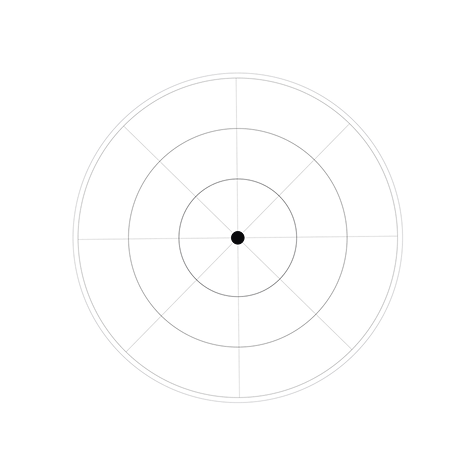

Reusable skills
Package methods, tools, constraints, and evaluation into callable capabilities.

AIPOCH · PRESENTATION
A 1920 × 1080 starter for clear technical storytelling.
Use equal visual weight for metrics with equal importance.
Package methods, tools, constraints, and evaluation into callable capabilities.
Keep data labels concise and place the source near the corresponding figure.
Use yellow for one focal module rather than coloring every surface.
Keep labels above the connector and align every step by its center.
Identify the question, context, evidence, and delivery constraints.
Use validated workflows, tools, checkpoints, and recovery paths.
Return readable results, parameters, evidence, and reproducible artifacts.

VISION